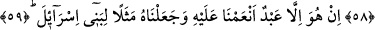

VAY O
ZULMEDENLERİN HÂLİNE!
57. Meryem oğlu Îsâ, bir misâl olarak anlatılınca senin kavmin hemen bağrışmaya
başladılar.
58. Bizim tanrılarımız mı hayırlı, yoksa o mu? dediler. Bunu sana ancak tartışmak
için söylediler. Doğrusu onlar kavgacı bir toplumdur.
59. O, sadece kendisine nimet verdiğimiz ve İsrâiloğullarına örnek kıldığımız bir
kuldur.
60. Eğer dileseydik, içinizden, yeryüzünde yerinize geçecek melekler yaratırdık.
61. Şüphesiz ki o (Îsâ), kıyâmetin (ne zaman kopacağının) bilgisidir. Ondan hiç
şüphe etmeyin ve bana uyun; çünkü bu, dosdoğru yoldur.
62. Sakın şeytan sizi yoldan çevirmesin. Çünkü o, sizin için apaçık bir düşmandır.
63. Îsâ, açık delillerle geldiği zaman demişti ki: Ben size hikmet getirdim ve
ayrılığa düştüğünüz şeylerden bir kısmını size açıklamak için geldim. Öyleyse
Allah’tan korkun ve bana itâat edin.
64. Çünkü Allah, benim de Rabbim, sizin de Rabbinizdir. O’na ibadet edin. İşte
bu, doğru yoldur.
65. Ama aralarından çıkan guruplar, bir ihtilâfa düştüler. Acı bir günün azâbı